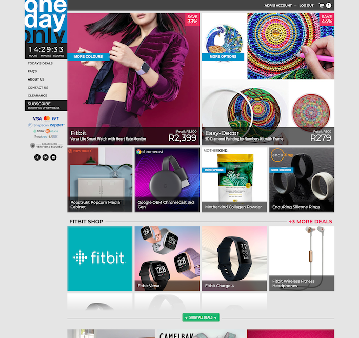
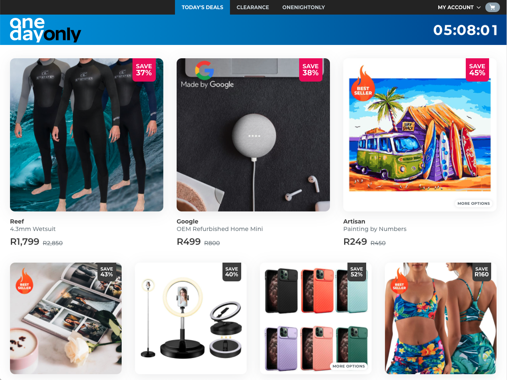
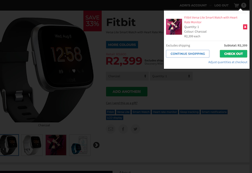
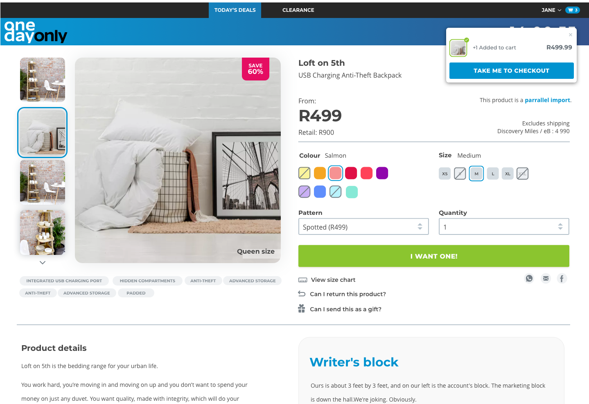
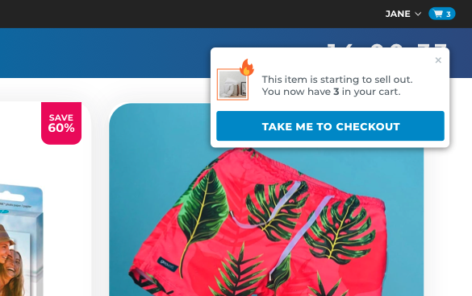
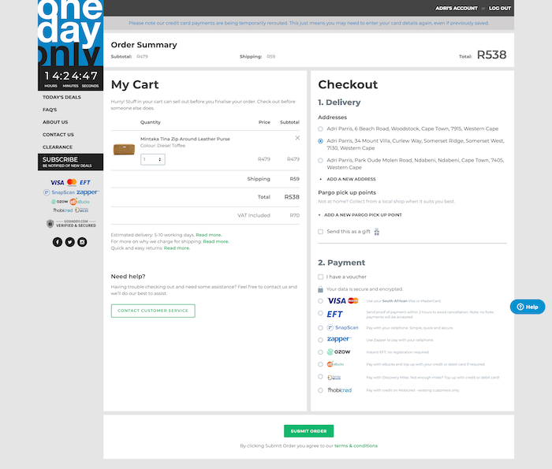
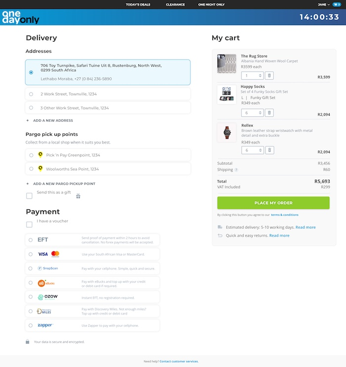
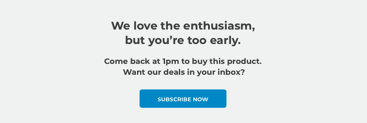
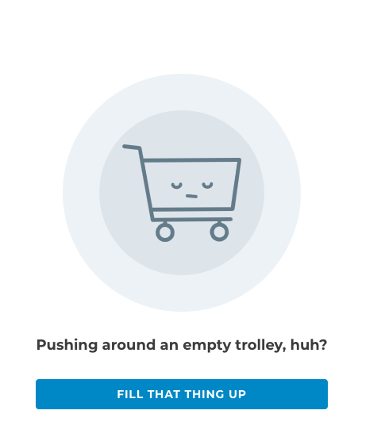

OneDayOnly
UI/UX Design & development for an e-commerce site
OneDayOnly is one of South Africa's most popular online stores. Beginning with customer research, I worked on designs that improved the user experience, overhauled the visual style, and finally participated in the rebuilding of the site's front-end.
The problem
While OneDayOnly has been a popular and successful online store for a number of years, their site’s design has stayed largely the same. Initial research at the start of the project showed that first time users tended to be sceptical of the site’s legitimacy, and many only used the site after recommendations from friends. They also appeared overwhelmed by the cluttered design.
One of the strongest features of the OneDayOnly brand is its funny, quirky tone of voice. Some users mentioned that they discovered the site after their friends shared an amusing blurb or social media post written by the marketing department. This presented a real opportunity to draw on the brand’s sense of humour while writing the copy for the website, without detracting from the urgency of grabbing the deals before they ran out.
These three objectives were the focus of the redesign:
- The design needed to reassure users that the deals are legitimate and trustworthy
- Since the site revolves around impulse purchases, the journey from the home page to checkout needed to be as frictionless as possible
- Ultimately, the shopping experience needed to be fun, with carefully considered points of delight where appropriate.

1. It’s not a scam: Conveying legitimacy through a cleaner design
One of the simplest ways to create credibility for OneDayOnly was to bring the visual look of the website up to date. By removing the medium-grey background and minimising the noise caused by the busy side bar, the website looked fresh and polished. Increased padding around the product images allowed the layout to breathe, allowing the user to browse the products without feeling overwhelmed by the clutter.
Bringing the website’s look and feel up to date was a quick and easy way to gain trust from first time users.

2. Buying deals against a ticking clock: Reducing friction and cognitive dissonance
OneDayOnly’s deals change at midnight every day, so users tend to browse the website looking for an excuse to buy something they probably do not need. Some users told me that they woke up at 6am every morning to check the site before the best deals were gone.
User testing showed that the existing flow was relatively smooth and painless. The site has always had a single-page checkout, which performed well in tests in spite of the fact that it was filled with information. However, there were still some opportunities to tweak the design to save the user time and mental energy.
Step one: Browse deals
The name, description and price of the product is displayed clearly on the home page. Before, users had to hover over each product to see the price.
Step two: Select a deal
When a deal is added to the cart, a notification appears to show that the product has been added successfully, with an option to check out immediately. Before, the cart would be displayed with an overlay that blocked out the entire page. The user would then be forced to decide between “check out”, “continue shopping” (which returns the user to the homepage), or dismissing the pop up to stay on the product page. The new notification allows the user to opt in to an action, or simply ignore it.


Right: This less intrusive notification acts as a nudge to move on.
The same notification box appears when the product in the user’s cart is selling quickly. This prompts the user to check out as soon as possible.

Step three: Check out
Finally, the check out page has been simplified. Unnecessary information has been removed, and all actions have been moved to the left hand side of the page. Starting in the top left corner, the user is guided through each step in a logical order.


3. Having fun while you shop: Introducing the brand to the site
Aside from the careful use of bold colours, the new website reflects the quirky brand most strongly in its use of copy. All the website’s notifications, prompts and informative sections were rewritten to sound more friendly and - only where appropriate - funny.


Reception
The most common feedback received on the new website has been that “it’s much cleaner” and “it’s much neater”. Essentially, the new design strips away the clutter and hindrances of the old design, providing a starting point for further optimisation of the user experience.
Future iterations on the design may include more features to encourage fast checkouts, such as the ability add to cart directly from the homepage, filtering of products, and personalised product recommendations for users.